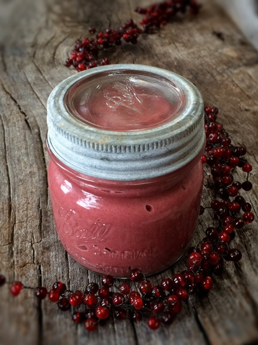
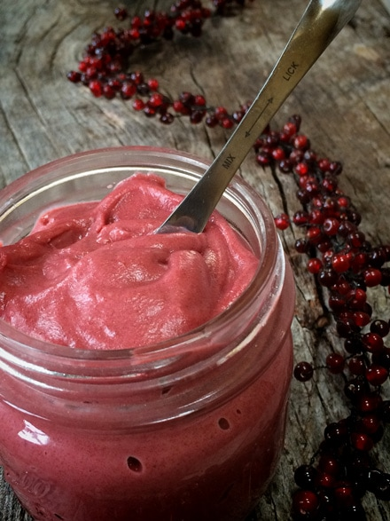

Ruby Valentine Frosting

~ raw, vegan, gluten-free ~
The more I eat, the more I learn. When I publish a recipe on my site, I try to share some little tidbit about at least one of the ingredients that I used.
Today, I have selected sea salt. I bet you wouldn’t have guessed that since this is a sweet frosting recipe. It’s my job to keep you on your toes. :) Most people will add at least a pinch of salt to their savory foods, but rarely do people think to add salt to sweet dishes. It’s not about trying to make the food salty, it’s all about enhancing flavors.
Salt plays several roles in recipes. It can balance out bitterness and enhance the sweetness of foods. It makes vanilla more vanilla-y. It makes chocolate more chocolatey. It makes watermelon taste more watermelon-y.
The key is to add it according to your tastes. Some people don’t believe in consuming salt at all… I for one am a firm believer in making sure to get salt into my diet. I have tested the effect of salt in my body, and now I know when I am not getting enough.
As soon as I make that adjustment in my diet, my symptoms clear up. If you have any medical conditions, it is always best to consult your doctor with questions about what is right for you. I am just sharing my personal experience.
What you need to know is that I am not talking about just any salt. I am certainly not talking about the typical white idolized salt that you find on most table tops. I am referring to Celtic sea salt. For starters it isn’t stripped of its nutrients, it contains less sodium that regular salt and contains more minerals.
When using Celtic sea salt, you might notice that it takes more to get that “salty” taste, so again, taste test as you go. Anyway, I will leave you with that… if you are interested in reading about Celtic sea salt, plug into Google, and you will have plenty of reading material to keep you busy for a long time. :) Just don’t take too much time… you need to make this recipe!
Yields 2 cups
- 1 cup cashews, soaked 2+ hours
- 1/2 cup beetroot juice
- 10 Medjool dates, pitted & soaked 2+ hours
- 1/4 cup cold-pressed coconut oil, melted
- 1/8 tsp Celtic sea salt
Preparation:
- Soak the cashews in about 2 cups of water. They will swell over time. At the same time but in a different bowl, soak the dates in enough warm water to cover them.
- After soaking the cashews, drain and discard the soak water.
- After soaking the dates, drain the soak water (this can be saved to put in a smoothie if you want) and give the dates an extra hand-squeeze to release any excess water.
- Add the cashews, beet juice, dates, coconut oil and salt to a high-powered blender. Blend until creamy, and no grit is detected. Depending on the blender, this can take 1-3 minutes.
- Chill the frosting for 2+ hour, until firm enough to pipe.
- The frosting is good for about 3-4 days.


For an idea where to use this frosting… click on the photo below.

© AmieSue.com